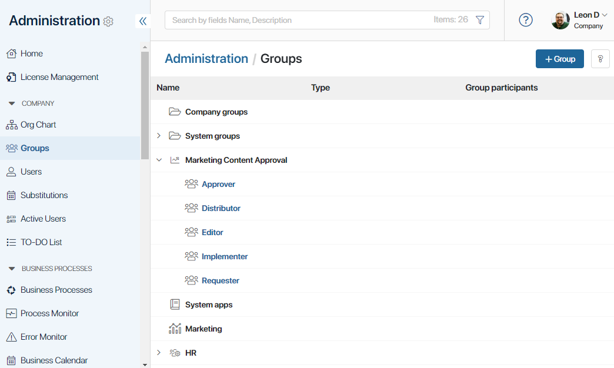
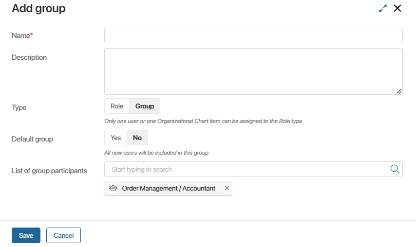
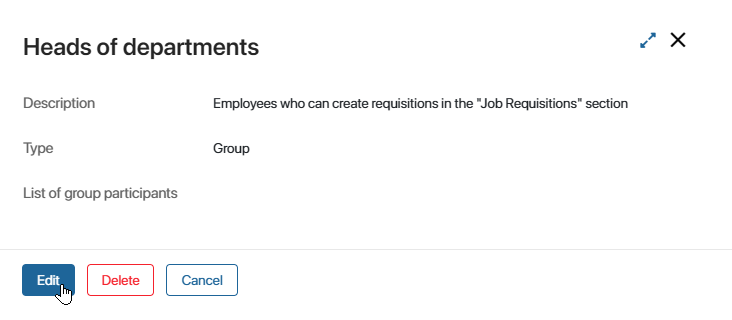
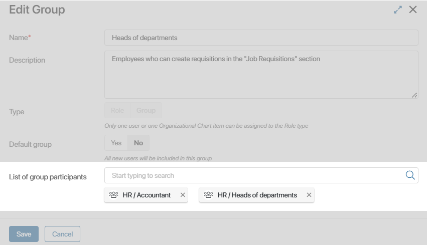
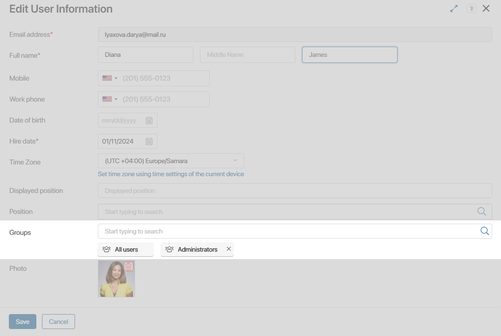
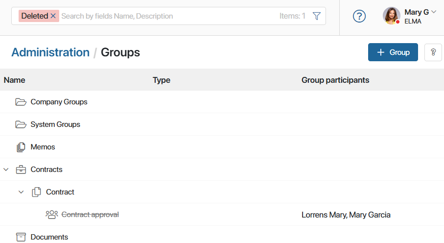

Groups are used to configure access to files, documents, apps, app items, and workspaces, and to determine executors in the business process.
Employees who perform similar tasks or are at the same level in the corporate hierarchy can be added to groups without having to configure access permissions for each of them individually. For example, you can group department heads together and give them access to a folder with reports.
When you add a user to a group, the user automatically inherits the group's access permissions.
A user can be a member of several groups at the same time. The combination of their personal access permissions and the permissions for the groups they are a member of is always valid for them.
There are the following groups:
- Custom. The administrator can create, edit, and delete them.
- System. They are created automatically and cannot be deleted but can be edited.

Create a group
To add a new group:
- Go to Administration > Groups. Here all the groups are displayed including groups and roles created in workspaces and apps.
All groups that are in the system are displayed here, including groups and roles configured in workspaces and apps.
- In the upper right corner, click on the +Group button.
- Fill in the fields in the Add group window that opens.

- Name*. The name that will be shown in the list of groups.
- Description. Detailed group description.
- Default group. If the box is set to Yes, all new users will be added to this group automatically.
- List of group participants. You can add users, existing groups, and org chart items to the group.
When selecting users, all employees of the company are available. You can use search by parameters to filter employees, for example, by position or hire date.
- After entering the data, save the group.
Groups can be created in workspaces and apps. You can make changes to the group data or delete it.
In the general list, groups of the Role type are marked with the icon.
Edit a group
You can edit the created group:
- Rename or change its description.
- Make it a default group or, on the contrary, stop automatically adding new users to it.
- Add members.
To edit a group, go to Administration > Groups, select a group, and click the Edit button. Make changes and click Save.

Add a user to a group
There are two ways to add a user to a group:
- Edit the group data. In the edit window, in the List of group participants field, select users, user groups, or an org chart item.

- Select the groups when inviting a user or editing a user profile.

Find a group
You can find a group by name or description. To do this, start typing a word in the search bar and press Enter.
Delete a group
начало внимание
You cannot delete a system group.
конец внимание
To delete a custom group or role, open its page and click Delete. The group will become unavailable in the general list, but you can restore it later.
If the deleted group is used in access permission settings and business processes, these settings will still apply and you will see the deleted group in them. To revoke the previously granted permissions, delete the group manually.
If you want to restore a deleted group:
- Display it in the list of groups by using the Deleted filter in the search bar.

- Open the group page and click Restore.
Found a typo? Select it and press Ctrl+Enter to send us feedback